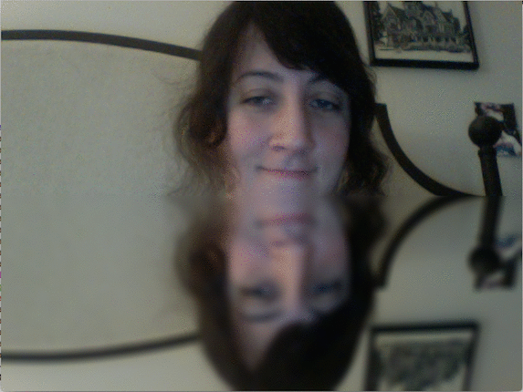

_Reflection_

My first OpenCV project. A reverse loop on the rows gives a reflection. The Gaussian filter gives the illusion of water.
_Pixelated_
Averaging pixel values for regions with size determined by a user set parameter creates a pixelated image.
_Edge Detection_

The built in edge detection program is very good. Here is an inferior one that I built from scratch.
_Kaleidoscope_

Playing with reflection, rotation, and recursion to create a scalable kaleidoscope.